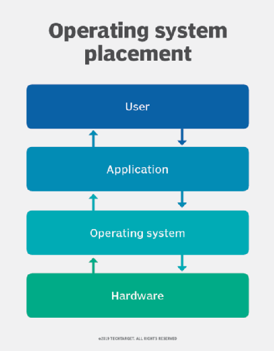

Types of operating systems
Types of operating systems:
Single- and multi-user:
Single-user operating systems have no facilities to distinguish users, but may allow multiple programs to run in tandem.
- A multi-user operating system extends the basic concept of multi-tasking with facilities that identify processes and resources, such as disk space,
belonging to multiple users, and the system permits multiple users to interact with the system at the same time.
Time-sharing operating systems schedule tasks for efficient use of the system and may also include accounting software for cost allocation of processor time,
mass storage, printing, and other resources to multiple users.
Distributed:
A distributed operating system manages a group of distinct, networked computers and makes them appear to be a single computer,
as all computations are distributed (divided amongst the constituent computers).
Templated:
In the distributed and cloud computing context of an OS, templating refers to creating a single virtual machine image as a guest operating system,
then saving it as a tool for multiple running virtual machines. The technique is used both in virtualization and cloud computing management,
and is common in large server warehouses.
Embedded:
Embedded operating systems are designed to be used in embedded computer systems. They are designed to operate on small machines with less autonomy (e.g. PDAs). They are very compact and extremely efficient by design, and are able to operate with a limited amount of resources. Windows CE and Minix 3 are some examples of embedded operating systems.
Real-time:
A real-time operating system is an operating system that guarantees to process events or data by a specific moment in time.
A real-time operating system may be single- or multi-tasking, but when multitasking,
it uses specialized scheduling algorithms so that a deterministic nature of behavior is achieved.
Such an event-driven system switches between tasks based on their priorities or external events,
whereas time-sharing operating systems switch tasks based on clock interrupts.
